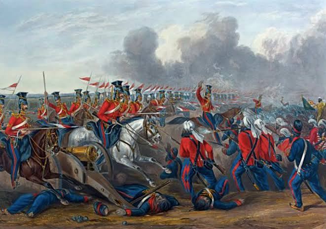

ਪਹਿਲਾ ਐਂਗਲੋ-ਸਿੱਖ ਯੁੱਧ (1845–46)


ਸਿਰਲੇਖ: ਪਹਿਲਾ ਐਂਗਲੋ-ਸਿੱਖ ਯੁੱਧ (1845–46)
ਸ਼੍ਰੇਣੀ: ਧਾਰਮਿਕ ਕੋਨਾ
ਕਲਾਕਾਰ: ਇਤਿਹਾਸਕ
ਸਾਲ: 1845 – 1846
ਸ਼੍ਰੇਣੀ: ਧਾਰਮਿਕ ਕੋਨਾ
ਕਲਾਕਾਰ: ਇਤਿਹਾਸਕ
ਸਾਲ: 1845 – 1846
ਪਹਿਲਾ ਐਂਗਲੋ-ਸਿੱਖ ਯੁੱਧ (1845–46)
ਪਹਿਲੇ ਐਂਗਲੋ-ਸਿੱਖ ਯੁੱਧ ਦੀ ਸ਼ੁਰੂਆਤ ਦਸੰਬਰ 1845 ਵਿੱਚ ਹੋਈ ਜਦੋਂ ਬ੍ਰਿਟਿਸ਼ ਫੌਜਾਂ ਦੀਆਂ ਭੜਕਾਊ ਹਰਕਤਾਂ ਦੇ ਜਵਾਬ ਵਿੱਚ ਖਾਲਸਾ ਫੌਜ ਨੇ ਸਤਲੁਜ ਦਰਿਆ ਪਾਰ ਕੀਤਾ। ਇਸ ਯੁੱਧ ਵਿੱਚ ਪੰਜ ਮੁੱਖ ਲੜਾਈਆਂ ਹੋਈਆਂ: ਮੁਦਕੀ (18 ਦਸੰਬਰ 1845), ਫੇਰੂਸ਼ਹਿਰ (21-22 ਦਸੰਬਰ 1845), ਬੱਦੋਵਾਲ (21 ਜਨਵਰੀ 1846), ਅਲੀਵਾਲ (28 ਜਨਵਰੀ 1846) ਅਤੇ ਸਭਰਾਓਂ (10 ਫਰਵਰੀ 1846)।
ਫੇਰੂਸ਼ਹਿਰ ਦੀ ਭਿਆਨਕ ਜੰਗ ਵਿੱਚ ਸਿੱਖ ਸੈਨਿਕਾਂ ਅਤੇ ਤੋਪਚੀਆਂ ਨੇ ਬ੍ਰਿਟਿਸ਼ ਕਮਾਂਡਰ-ਇਨ-ਚੀਫ਼ ਲਾਰਡ ਗਫ਼ ਅਤੇ ਗਵਰਨਰ-ਜਨਰਲ ਲਾਰਡ ਹਾਰਡਿੰਗ ਦੀਆਂ ਫੌਜਾਂ ਦੇ ਪੈਰ ਉਖਾੜ ਦਿੱਤੇ ਸਨ। ਅੰਗਰੇਜ਼ ਇਤਿਹਾਸਕਾਰ ਮੰਨਦੇ ਹਨ ਕਿ 21 ਦਸੰਬਰ ਦੀ ਰਾਤ ਬ੍ਰਿਟਿਸ਼ ਰਾਜ ਦੀ ਭਾਰਤ ਵਿੱਚ 'ਸਭ ਤੋਂ ਹਨੇਰੀ ਰਾਤ' ਸੀ ਅਤੇ ਉਹ ਆਤਮ-ਸਮਰਪਣ ਦੀ ਤਿਆਰੀ ਵਿੱਚ ਸਨ, ਪ੍ਰੰਤੂ ਪ੍ਰਧਾਨ ਮੰਤਰੀ ਲਾਲ ਸਿੰਘ ਅਤੇ ਸੈਨਾਪਤੀ ਤੇਜ ਸਿੰਘ ਦੀ ਗ਼ੱਦਾਰੀ ਨੇ ਜਿੱਤ ਨੂੰ ਹਾਰ ਵਿੱਚ ਬਦਲ ਦਿੱਤਾ।
10 ਫਰਵਰੀ 1846 ਨੂੰ 'ਸਭਰਾਓਂ ਦੀ ਆਖਰੀ ਲੜਾਈ' ਹੋਈ, ਜਿੱਥੇ 70 ਸਾਲਾ ਸੂਰਬੀਰ ਜਰਨੈਲ ਸਰਦਾਰ ਸ਼ਾਮ ਸਿੰਘ ਅਟਾਰੀਵਾਲਾ ਨੇ ਸਤਲੁਜ ਕੰਢੇ ਕਸਮ ਖਾਧੀ ਕਿ ਉਹ ਜਿਉਂਦੇ ਜੀਅ ਪਿੱਛੇ ਨਹੀਂ ਹਟਣਗੇ। ਉਨ੍ਹਾਂ ਨੇ ਅੰਗਰੇਜ਼ੀ ਸੰਗੀਨਾਂ ਅੱਗੇ ਸਿੱਧਾ ਹਮਲਾ ਬੋਲਿਆ ਅਤੇ ਸੱਤ ਗੋਲੀਆਂ ਖਾ ਕੇ ਸ਼ਹੀਦੀ ਪ੍ਰਾਪਤ ਕੀਤੀ। ਯੁੱਧ ਮਗਰੋਂ 9 ਮਾਰਚ 1846 ਨੂੰ 'ਲਾਹੌਰ ਦੀ ਸੰਧੀ' ਹੋਈ, ਜਿਸ ਰਾਹੀਂ ਅੰਗਰੇਜ਼ਾਂ ਨੇ ਜਲੰਧਰ ਦੋਆਬ ਖੋਹ ਲਿਆ, ਭਾਰੀ ਜੁਰਮਾਨਾ ਲਾਇਆ ਅਤੇ 75 ਲੱਖ ਰੁਪਏ ਵਿੱਚ ਜੰਮੂ-ਕਸ਼ਮੀਰ ਗੁਲਾਬ ਸਿੰਘ ਨੂੰ ਵੇਚ ਦਿੱਤਾ।
'ਜੇਕਰ ਜਰਨੈਲਾਂ ਨੇ ਗ਼ੱਦਾਰੀ ਨਾ ਕੀਤੀ ਹੁੰਦੀ, ਤਾਂ ਭਾਰਤ ਵਿੱਚ ਅੰਗਰੇਜ਼ੀ ਹਕੂਮਤ ਦਾ ਸੂਰਜ ਉਸੇ ਦਿਨ ਡੁੱਬ ਗਿਆ ਹੁੰਦਾ।'
ਪਹਿਲੇ ਐਂਗਲੋ-ਸਿੱਖ ਯੁੱਧ ਦੀ ਸ਼ੁਰੂਆਤ ਦਸੰਬਰ 1845 ਵਿੱਚ ਹੋਈ ਜਦੋਂ ਬ੍ਰਿਟਿਸ਼ ਫੌਜਾਂ ਦੀਆਂ ਭੜਕਾਊ ਹਰਕਤਾਂ ਦੇ ਜਵਾਬ ਵਿੱਚ ਖਾਲਸਾ ਫੌਜ ਨੇ ਸਤਲੁਜ ਦਰਿਆ ਪਾਰ ਕੀਤਾ। ਇਸ ਯੁੱਧ ਵਿੱਚ ਪੰਜ ਮੁੱਖ ਲੜਾਈਆਂ ਹੋਈਆਂ: ਮੁਦਕੀ (18 ਦਸੰਬਰ 1845), ਫੇਰੂਸ਼ਹਿਰ (21-22 ਦਸੰਬਰ 1845), ਬੱਦੋਵਾਲ (21 ਜਨਵਰੀ 1846), ਅਲੀਵਾਲ (28 ਜਨਵਰੀ 1846) ਅਤੇ ਸਭਰਾਓਂ (10 ਫਰਵਰੀ 1846)।
ਫੇਰੂਸ਼ਹਿਰ ਦੀ ਭਿਆਨਕ ਜੰਗ ਵਿੱਚ ਸਿੱਖ ਸੈਨਿਕਾਂ ਅਤੇ ਤੋਪਚੀਆਂ ਨੇ ਬ੍ਰਿਟਿਸ਼ ਕਮਾਂਡਰ-ਇਨ-ਚੀਫ਼ ਲਾਰਡ ਗਫ਼ ਅਤੇ ਗਵਰਨਰ-ਜਨਰਲ ਲਾਰਡ ਹਾਰਡਿੰਗ ਦੀਆਂ ਫੌਜਾਂ ਦੇ ਪੈਰ ਉਖਾੜ ਦਿੱਤੇ ਸਨ। ਅੰਗਰੇਜ਼ ਇਤਿਹਾਸਕਾਰ ਮੰਨਦੇ ਹਨ ਕਿ 21 ਦਸੰਬਰ ਦੀ ਰਾਤ ਬ੍ਰਿਟਿਸ਼ ਰਾਜ ਦੀ ਭਾਰਤ ਵਿੱਚ 'ਸਭ ਤੋਂ ਹਨੇਰੀ ਰਾਤ' ਸੀ ਅਤੇ ਉਹ ਆਤਮ-ਸਮਰਪਣ ਦੀ ਤਿਆਰੀ ਵਿੱਚ ਸਨ, ਪ੍ਰੰਤੂ ਪ੍ਰਧਾਨ ਮੰਤਰੀ ਲਾਲ ਸਿੰਘ ਅਤੇ ਸੈਨਾਪਤੀ ਤੇਜ ਸਿੰਘ ਦੀ ਗ਼ੱਦਾਰੀ ਨੇ ਜਿੱਤ ਨੂੰ ਹਾਰ ਵਿੱਚ ਬਦਲ ਦਿੱਤਾ।
10 ਫਰਵਰੀ 1846 ਨੂੰ 'ਸਭਰਾਓਂ ਦੀ ਆਖਰੀ ਲੜਾਈ' ਹੋਈ, ਜਿੱਥੇ 70 ਸਾਲਾ ਸੂਰਬੀਰ ਜਰਨੈਲ ਸਰਦਾਰ ਸ਼ਾਮ ਸਿੰਘ ਅਟਾਰੀਵਾਲਾ ਨੇ ਸਤਲੁਜ ਕੰਢੇ ਕਸਮ ਖਾਧੀ ਕਿ ਉਹ ਜਿਉਂਦੇ ਜੀਅ ਪਿੱਛੇ ਨਹੀਂ ਹਟਣਗੇ। ਉਨ੍ਹਾਂ ਨੇ ਅੰਗਰੇਜ਼ੀ ਸੰਗੀਨਾਂ ਅੱਗੇ ਸਿੱਧਾ ਹਮਲਾ ਬੋਲਿਆ ਅਤੇ ਸੱਤ ਗੋਲੀਆਂ ਖਾ ਕੇ ਸ਼ਹੀਦੀ ਪ੍ਰਾਪਤ ਕੀਤੀ। ਯੁੱਧ ਮਗਰੋਂ 9 ਮਾਰਚ 1846 ਨੂੰ 'ਲਾਹੌਰ ਦੀ ਸੰਧੀ' ਹੋਈ, ਜਿਸ ਰਾਹੀਂ ਅੰਗਰੇਜ਼ਾਂ ਨੇ ਜਲੰਧਰ ਦੋਆਬ ਖੋਹ ਲਿਆ, ਭਾਰੀ ਜੁਰਮਾਨਾ ਲਾਇਆ ਅਤੇ 75 ਲੱਖ ਰੁਪਏ ਵਿੱਚ ਜੰਮੂ-ਕਸ਼ਮੀਰ ਗੁਲਾਬ ਸਿੰਘ ਨੂੰ ਵੇਚ ਦਿੱਤਾ।
'ਜੇਕਰ ਜਰਨੈਲਾਂ ਨੇ ਗ਼ੱਦਾਰੀ ਨਾ ਕੀਤੀ ਹੁੰਦੀ, ਤਾਂ ਭਾਰਤ ਵਿੱਚ ਅੰਗਰੇਜ਼ੀ ਹਕੂਮਤ ਦਾ ਸੂਰਜ ਉਸੇ ਦਿਨ ਡੁੱਬ ਗਿਆ ਹੁੰਦਾ।'
ਮੋਬਾਈਲ 'ਤੇ ਖੋਲ੍ਹੋ
ਆਪਣੇ ਫ਼ੋਨ 'ਤੇ ਇਸ ਕਲਾ ਰਿਕਾਰਡ ਨੂੰ ਦੇਖਣ ਲਈ ਸਕੈਨ ਕਰੋ।